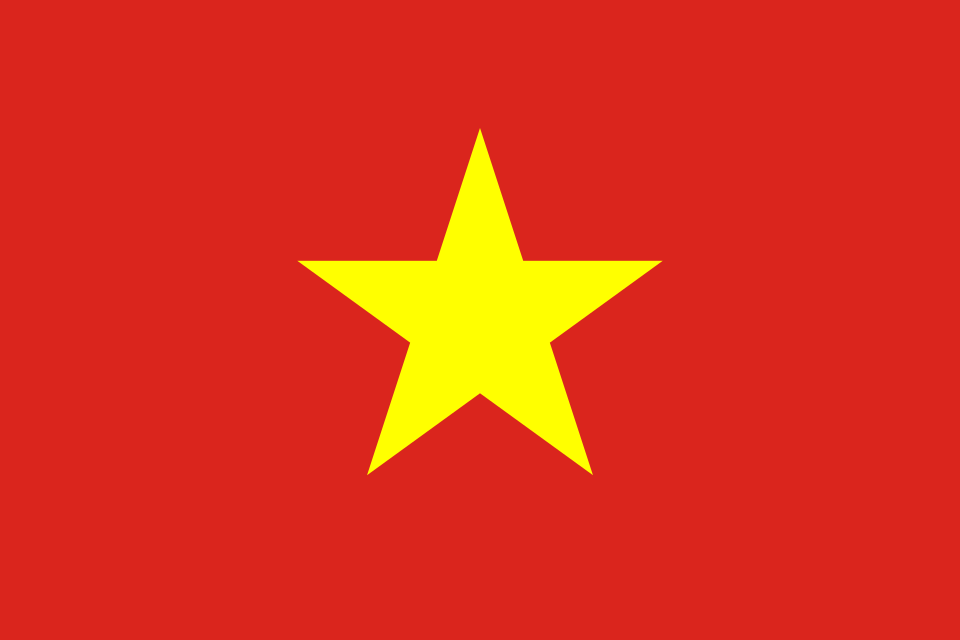
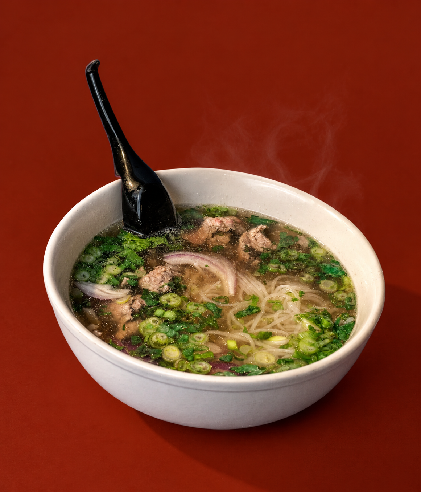
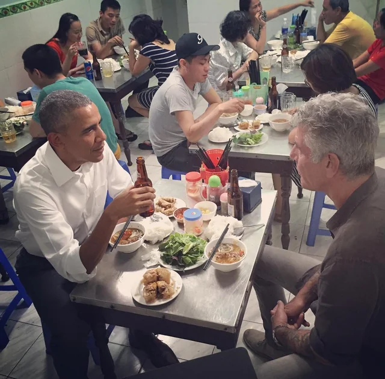

Phở is a traditional Vietnamese noodle soup, usually made with rice noodles, meat, and herbs. Phở doesn't have a set style or recipe; people can enjoy Phở with different types of broth bases and meats. Whether you prefer chicken stock bases, fish stock, steak cuts, tendons, or meatballs, there'll be a delicious bowl of Phở that you'll enjoy!
Pronounced: "fuh" NOT "foe"
Regional Styles of Phở
Depending on the regional style the chef follows, your bowl of Phở will be different if you have a northern bowl from a southern bowl of Phở.
Northern Phở: A simple soup, clear and savory broth, wide noodles with cilantro and green onions. This style isn't as "sweet" (albeit not sugary sweet) and customizable as southern phở. People familiar with this style usually skip add-on ingredients; northern phở is about the broth holding its own.
Southern Phở: A customizable soup, the broth is sweeter than its northern counterpart yet still savory. Served with thin rice noodles, cilantro and green onions with a healthy serving of bean sprouts, Thai basil, sawtooth herb, lime, and chili on the side. Typically, you're more likely to come across this style of phở here in the United States, as many Vietnamese in the U.S. are southern Vietnamese (or are by family).
Common Toppings
Typically, restaurants list phở by its toppings; for example, one would order "phở tái."

- Tái
- Thin slices of rare steak that cook in the hot broth.
- Chín
- Well-done brisket.
- Nạm
- Flank steak, usually cooked well-done and sliced thin.
- Gầu
- Fatty brisket, richer and more tender than regular brisket.
- Bò viên
- Beef meatballs, usually cut in half.
- Đặc biệt
- A combo bowl with a bit of every cut.